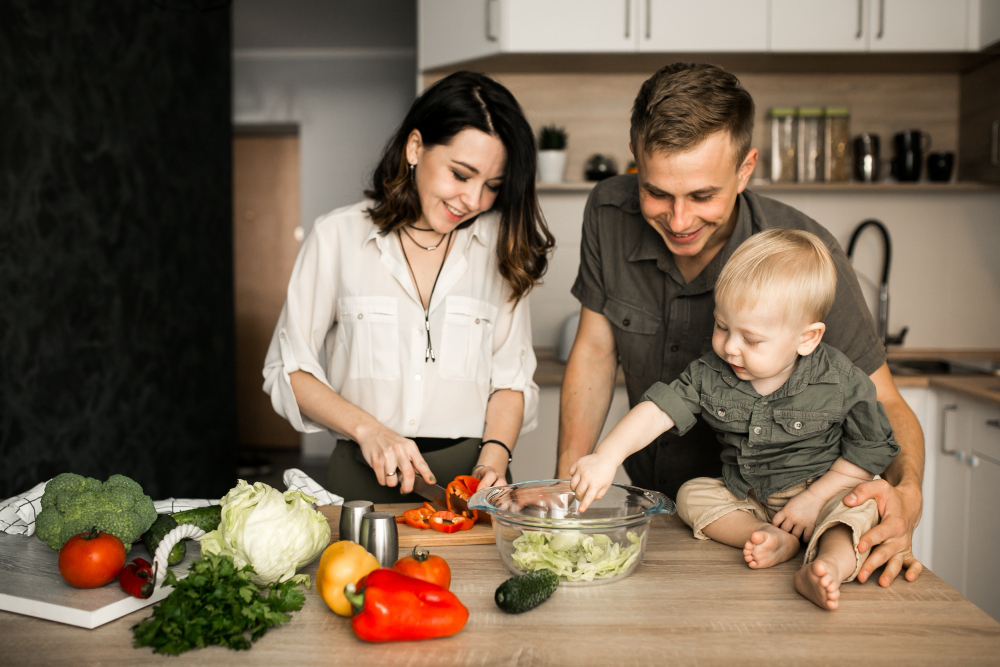
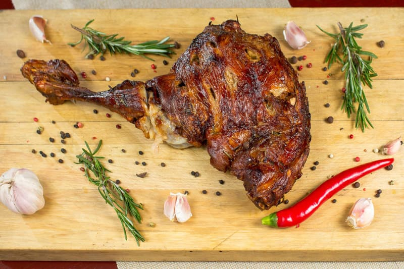
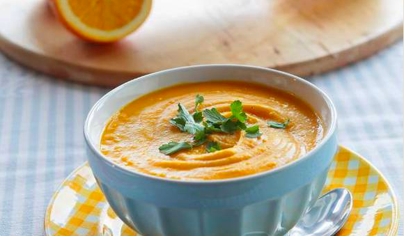
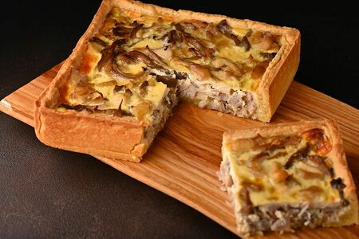
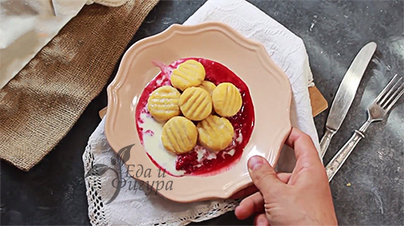

5 лучших рецептов для зимних вечеров
Приятный и уютный зимний вечер всегда в кругу семьи начинается с ужина.Именно зимой нам хочется больше пряностей и сытных блюд.
Баранина, запеченная с розмарином и чесноком
Готовность мяса всегда проверяйте ножом или вилкой. Если хотите, чтобы мясо отделялось легко от кости, запекайте его 2,5-3 часа.
Ингридиенты
- Баранина
- 1 головка чеснока
- Веточка розмарина
- 5-6 ст.л оливкого масла
- 4 луковицы
Приготовление
1. Для начала в мясе необходимо сделать надрезы, используя нож. Далее, в проделанные надрезы вставляем дольки чеснока. После этого баранину смазываем растительным маслом. Напоследок «от души» солим и перчим по вкусу, а также кладем несколько
веточек свежего розмарина, сверху на мясо и под него.
2. Разогреваем духовку до температуры в 180 C. Запекаем баранину до средней степени готовности (на этой уйдет примерно 2,5 или 3 часа). Помните, что ни в коем случае не нужно запекать
мясо слишком долго, ведь нежным и ароматным оно будет лишь в том случае, когда центр в разрезе приобретет слегка розовый оттенок. Чтобы не рисковать, мы предлагаем Вам способ, который позволит рассчитать время запекания: на каждые 500
грамм баранины нужно 15-20 минут, также можно добавить еще 10 минут к общему времени приготовления.
3. По завершении процесса запекания баранине необходимо позволить немного остыть (примерно 15 минут), и только после этого делить блюдо
на порции.
Подавапйте с соусом из запеченных овощей
Совет
Выложив баранину из духовки, выложите ее на деревянную доску или подогретое блюдо, накройте фольгой и оставьте на 10 минут в покое. Таким образрм мясо будет равномерно сочным.
Тыквенный суп с апельсинами
Это удивительный суп - подается прямо в тыкве.
Ингридиенты
- 1 тыква
- 1 апельсин
- 1 крупная картофелина
- 1 ст.л сливочного масла
- 1 луковица
- 1 ст.л оливкового масла
Ингридиенты
1. Тыкву почистить и порезать на кусочки.
2. Лук почистить и нарезать не слишком мелко. Разогреть в кастрюле с толстым дном растительное масло и томить лук до прозрачности.
3. Добавить тыкву, подержать на огне еще минуту, затем залить горячим овощным бульоном. Довести до кипения и варить на медленном огне минут 15–20, пока тыква не станет совсем мягкой.
4. Цедру апельсина натереть на мелкой терке, отжать из него сок.Суп остудить, добавить сок и 1/2 ч. ложки цедры апельсина, измельченную кинзу и взбить все в блендере. На весь экран
Разлить суп в тарелки, добавить понемногу сметаны и украсить листьями кинзы.
Совет
Желательно, чтобы тыква была свежая, долго не лежалаЖ со временем ее мякоть усыхаетБ а знасит суп получится не таким сочным.
Пирог с курицей
Чем больше сверху сыра тем вкуснее корочка.
Ингридиенты
- 2 куриных филе
- 2 цукини
- 250г творога
- 100г твердого сыра
- 1 луковица
- 1 ст.л оливкового масла
- 2 яйца
- 100мл сливок
- 2 ст.л муки
- 1 зубчик чеснока
Приготовлениеы
1. Куриное мясо отварить и мелко нарезать.
2. Лук почистить и нарезать не слишком мелко. Разогреть в кастрюле с толстым дном растительное масло и томить лук до прозрачности.
3. Добавить цукини и тушить все вместе 10 минут.
4. Яйца взбить с солью венчиком.
5.Добавить творог, сливки, муку и 1/2 тертого сыра, все размешать как следует.
5.Добавить обжаренные овощи и курицу. Посолить и поперчить и все вместе размешать.
6.Разъемную форму смазать маслом и присыпать мукой (этот пирог можно подавать и в обычной форме для запеканок). Выложить в нее нашу смесь.
7.Сверху разложить кружочки цукини (второй цукини мы режем на кружки 0,5 см), посыпаем все второй половиной сыра и отправляем в духовку на 30 минут при 180 градусах.
За 5 минут увеличить температуру до 220 градусов и подпекать еще 10 минут на самом верху духовки! Получится суперская корочка!
Совет
Смело варьируйте ингридиентами начинки, в зависимости, что есть под рукой.
Ленивые вареники с тыквой
Творог заменим тыквой и назовем вареники - ньокки.
Ингридиенты
- 600г тыквы
- 1.5 стакана муки
- 1 желток
- 100г сливочного масла
- 50г пармезана
- 1.2 ст.л перца и соли
Приготовление
1. Тыкву почистить и порезать на кусочки.
2. Уварите тыкву с 2ст.л сливочного масла до готовности.
3. Добавить муку и желток, перец, соль и все перемешать.
Cформировать вареники и варить на медленном огне 3-4 минуты.
4. Приготовить соус.Цедру апельсина натереть на мелкой терке, растопить сливосное масло и добавить специи и цедру.
Подавайте вареники,поливая соусом
Совет
Добавьте в соус кедровые орешки и каплю белого вина и вы получите мишленовский вкус.